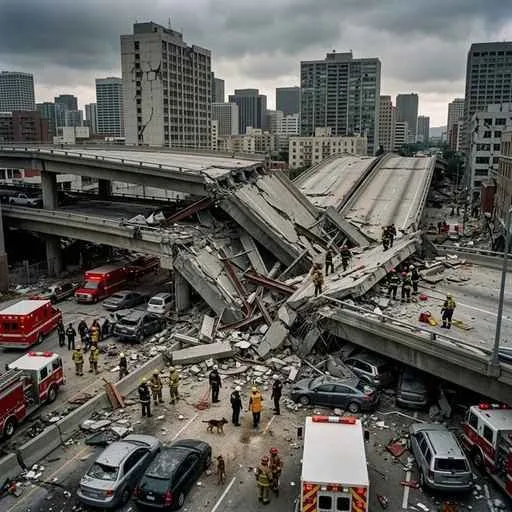

28. 大正チE��クラシーと新しい社会運勁E/h1>
大正時代�E�E910、E920年代�E�、第一次世界大戦後�E平和な空気を背景に、政治の民主化や自由を求める世論がかつてなぁE��ど高まりました。これを「大正チE��クラシー」と呼びます。今回は、民主主義を求めた政治運動と、女性めE��差別部落の人、E��労働老E��ちが立ち上がった新しい社会運動�E歩み、そして1925年の「アメとムチ」�E法律を詳しく解説します！E/p>
1. 大正チE��クラシーと民本主義�E�みんぽんしめE���E�E/h2>
大正時代には、藩閥による独裁を崩し、国民�E意見を政治に反映させるため�E憲政擁護運動�E�守�E運動�E�が盛んになり、学問�E世界からも民主主義を後押しする老E��方が生まれました、E/p>
◁E吉野作造�E�よし�Eさくぞう�E��E民本主義
東京帝国大学の教授であっぁEspan class="marker-orange">吉野作造は、大日本帝国憲法が定める「天皁E��権」�E枠絁E��を壊さずに民主主義を取り�Eれるため、Espan class="marker-yellow">民本主義�E�みんぽんしめE���E�E/span>を提唱しました、E/p>
これは、、E*政治の目皁E�E一般民衁E�E利益�E幸福に置くべきであり、すべての決定�E民衁E�E意向に従って行うべきだ**」とする主張です。この老E��方は、E��挙権を庁E��国民に与える「普通選挙運動」�E強力な琁E��的支柱となり、多くの知識人めE��生に支持されました、E/p>
2. 多様な社会運動�E庁E��めE/h2>
自由な空気が庁E��る中、社会�E中で弱ぁE��場にあった労働老E��農民、女性、差別されてぁE��人、E��自刁E��ちの人権めE��墁E��喁E��求めて次、E��絁E��を立ち上げました、E/p>
① 女性の地位向上運勁E➁E平塚らぁE��ぁE/strong>
平塚らぁE��ぁE���EらつからぁE��ぁE��E/span>ら�E、女性による日本初�E斁E��誌、E*青鞜�E�せぁE��ぁE��E*』を発刊し、「�E始、女性は太陽であった」と宣言して女性の自立を訴えました。さらに、市川房枝（いちかわふさえ�E�らと**新婦人協企E*を設立し、女性の政治参加の権利�E�当時は女性が演説を�Eくことすら法律で禁じられてぁE��した�E�を求める運動を行いました、E/p>
② 被差別部落の解放運動 ➁E全国水平社�E�E922年�E�E/strong> 江戸時代以来、厳しい差別に苦しめられてぁE��人、E��、�Eら�E団結によって差別を打破しよぁE��、E922年に京都で全国水平社�E�ぜんこくすぁE��ぁE��めE��E/span>を結�Eしました。「人の世に熱あれ、人間に光あれ」とぁE��ぁE��平社宣言は、日本初�E人権宣言として有名です、E/p>
③ 労働老E��農民�E運動 労働老E�E「日本労働総同盟」を結�Eして労働時間�E短縮めE��働環墁E�E改喁E��求め、農民�E「日本農民絁E��」を結�Eして地主に対して小作料�E�土地代�E��E引き下げを求める小作争議を�E国で起こしました、E/p>
3. 1925年の「アメとムチ」�E法征E/h2>
国民�E激しい普通選挙運動�E前に、政府�EつぁE��選挙権の拡大を認めましたが、それと同時に危険な思想を取り締まる法律を同時に作りました。この1925年に制定された�E�つの法律�EセチE��はチE��ト�E趁E��E��出ポイントです！E/p>
| 法律名 | 制定された冁E�� | ポイントと意義 |
|---|---|---|
| 【アメ、Ebr>普通選挙況E/span> | 納税額による制限を完�Eに廁E��し、E*満25歳以上�Eすべての男孁E*に選挙権を与える、E/td> | 有権老E�E数は全人口の紁E0%�E�紁E240丁E���E�に急増しました。しかし、E*女性にはまだ選挙権はありません**でした、E/td> |
| 【ムチ、Ebr>治安維持況E/span> | 天皁E��を否定する運動（�E産主義・社会主義思想�E�や、私有財産制を否定する運動を取り締まり�E罰する、E/td> | ロシア革命の影響で庁E��る社会主義思想を防ぐために制定され、�Eちに人、E�E言論�E自由を厳しく弾圧する武器となりました、E/td> |
4. 関東大霁E���E�E923年�E�と都市文化�E発屁E/h2>
1920年代、日本の社会を大きく変える大災害が首�E圏を襲ぁE��した、E/p>
① 関東大霁E���E�E923年9朁E日�E�E/h3>
1923年9朁E日、南関東を震源とする巨大地霁E��発生しました。東京めE��浜�E街�E倒壊し、その後に発生した大火災によって、死老E�E行方不�E老E��10丁E��を趁E��る甚大な被害となりました。この大混乱の中、精神不安から「朝鮮人が井戸に毒を入れた」などのチE�Eが庁E��り、�E警団らによって多くの朝鮮人めE��会主義老E��殺害される悲劁E��発生しました、E/p>

図3�E�東京の大部刁E��火の海と化し、甚大な被害を�Eした「関東大霁E��」�Eイメージ
② 都市文化�Eモダン匁E/h3>
霁E��の復興を進める中で、東京の街�E急速に近代都市へと生まれ変わりました、E 洋服を着たサラリーマンめE��モダンガール�E�モガ�E�」「�E業婦人」が街を行き交ぁE��百貨店（デパ�Eト）やバス、E冁E��一のタクシー�E��Eタク�E�が普及しました。また、E*1925年にはラジオ放送E*が始まり、蓄音機や映画などの大衁E��楽が一気に家庭へと庁E��ってぁE��ました、E/p>
🔥 こ�E単�EのチE��ト対策�E暗記�EコチE/p>
- ☁E/span> 吉野作造の「民本主義」�E記述�E�Ebr> ・「天皁E��権を認めつつ、E*政治の目皁E�E一般民衁E�E利益に置き、E��要な決定�E民衁E�E意見で行うべきだ**とした主張」と書けるようにしましょぁE��E
- ☁E/span> 新しい社会運動�E人物と絁E��名�E�Ebr> ・平塚らぁE��ぁE* �E�E女性運動、文芸誌、E*青鞜』（�Eちに新婦人協会）、Ebr> ・全国水平社�E�E922年�E�E* �E�E部落解放運動。、E*人に�E�E922�E�優しく、水平社」と覚えましょぁE��E
- ☁E/span> 普通選挙法！E925年�E��E有権老E��件�E�絶対忁E��！E��E/strong>�E�Ebr> ・、E*満25歳以上�Eすべての男子（納税額�E制限なし！E*」、Ebr> ・ひっかけ問題対策：、E*女性にはまだ選挙権がなかっぁE*」とぁE��点が最重要です、E
- ☁E/span> 1925年のアメとムチ�EセチE��暗訁E/strong>�E�Ebr> ・、E*行く国�E�E925�E�選べる普通選挙、裏には治安維持況E*」と、普通選挙法と治安維持法が**同じ年�E�E925年�E�E*にセチE��で制定されたことを覚えましょぁE��E